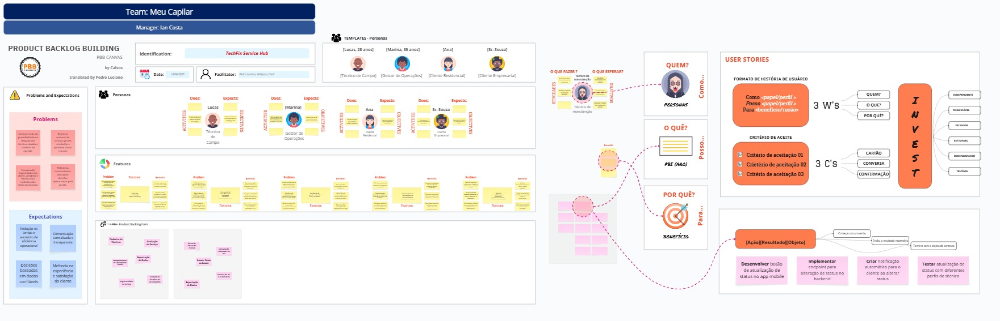

PRODUCT BACKLOG BUILDING (PBB) – TechFix

PRODUCT NAME
TechFix Service Hub – plataforma web e mobile para gestão de chamados de assistência técnica de equipamentos eletrônicos.
PROBLEMAS
- Atrasos e falta de previsibilidade na chegada dos técnicos devido a conflitos de agenda.
- Registros manuais de serviços geram retrabalho e perda de dados cruciais.
- Comunicação fragmentada entre cliente, atendente e técnico causa confusão sobre status do chamado.
- Relatórios inconsistentes dificultam decisões operacionais pela gestão.
EXPECTATIVAS
Redução no tempo e aumento da eficiência operacional
A plataforma deve reduzir em até 30% o tempo médio de atendimento, otimizando a roteirização dos técnicos e eliminando retrabalhos com registros manuais.
Comunicação centralizada e transparente
Ao integrar chat e rastreamento em tempo real, a solução trará mais clareza para clientes e maior coordenação entre suporte e técnicos.
Decisões baseadas em dados confiáveis
Relatórios automáticos e dashboards em tempo real permitirão que gestores acompanhem KPIs com precisão e agilidade.
Melhoria na experiência e satisfação do cliente
Com processos mais rápidos, feedback facilitado e maior previsibilidade, espera-se alcançar um CSAT ≥ 4,5/5.
PERSONAS
| Persona | Descrição | Necessidade-chave |
|---|---|---|
| Técnico de Campo | Profissional que realiza reparos em campo. | Roteiro otimizado e informações claras do chamado no app mobile. |
| Gestor de Operações | Responsável por acompanhar KPIs e alocar técnicos. | Visão em tempo real dos atendimentos e relatórios automáticos. |
| Cliente Empresarial | Empresa que contrata manutenção recorrente. | Agendamento rápido e transparência no status. |
| Cliente Residencial | Consumidora que solicita reparo pontual. | Acompanhamento do técnico e feedback simplificado. |
FEATURES (FUNCIONALIDADES DE ALTO NÍVEL)
-
Login com autenticação segura (token JWT).
-
Sincronização de dados offline/online com fallback automático.
-
Visualização de agenda e ordens de serviço atribuídas.
-
Check-in/check-out georreferenciado em atendimentos.
-
Formulários dinâmicos para coleta de informações técnicas.
-
Upload de fotos e evidências da visita técnica.
-
Status de atendimento (em andamento, pendente, finalizado).
-
Assinatura digital do cliente no encerramento da OS.
BENEFÍCIOS GERADOS PELA SOLUÇÃO TECHFIX
1. Redução de atrasos e maior previsibilidade
- Roteirização automática otimiza os deslocamentos.
- Agenda inteligente evita conflitos e sobreposições.
- Técnicos chegam no horário e com informações atualizadas.
2. Eliminação de retrabalho e perda de dados
- App mobile offline-first assegura registros mesmo sem conexão.
- Dados digitalizados eliminam o uso de papel e duplicidades.
- Formulários padronizados reduzem erros de preenchimento.
3. Comunicação clara e centralizada
- Chat integrado conecta cliente, suporte e técnico em um só canal.
- Redução de ruídos e retrabalho por falha de comunicação.
- Histórico de interações facilita acompanhamento e suporte.
4. Gestão orientada por dados em tempo real
- Dashboard atualizado permite decisões baseadas em fatos.
- Métricas de desempenho ajudam a identificar gargalos.
- Supervisores acompanham o status das operações em tempo real.
Behavior-Driven Development (BDD) – Critérios de Aceitação
PBI‑01 – Cadastro de Técnicos (Alta)
Cenário: Cadastro de Técnicos
Dado que o gestor acessa o painel de administração,
Quando ele preenche os dados do técnico (nome: "João Silva", especialidade: "Manutenção de Rede", disponibilidade: "08h às 12h") e confirma o cadastro,
Então o técnico é incluído na escala e aparece na lista de técnicos disponíveis, com as seguintes informações: nome, especialidade e disponibilidade.
Critérios de Aceitação: - O gestor consegue adicionar técnicos com nome, especialidade e horários.
-
Técnicos aparecem disponíveis para escala após cadastro.
-
O sistema impede cadastro com campos obrigatórios vazios.
-
É possível editar ou excluir um técnico cadastrado.
PBI‑02 – Consulta de Chamados do Dia (Alta)
Cenário: Consulta de Chamados do Dia
Dado que o técnico "Carlos Lima" está logado no app mobile,
Quando ele acessa a aba de chamados,
Então são exibidos os atendimentos do dia, incluindo: cliente: "Empresa X", endereço: "Rua das Palmeiras, 123", horário: "09h30", tipo de serviço: "Instalação de Roteador".
Critérios de Aceitação: - O técnico vê todos os chamados do dia organizados por ordem de atendimento.
-
Cada chamado exibe cliente, endereço, horário e tipo de serviço.
-
Chamados atualizam automaticamente em caso de alteração pelo gestor.
-
O técnico pode marcar chamados como "em andamento" ou "concluído".
PBI‑03 – Acompanhamento da Localização do Técnico (Alta)
Cenário: Acompanhamento da Localização do Técnico
Dado que o técnico "Marcos Tavares" iniciou o deslocamento e ativou o check-in às 14h,
Quando o cliente "Ana Souza" acessa o chamado #5421 pelo app,
Então ele vê a localização atual do técnico no mapa, em movimento, com o tempo estimado de chegada: 15 minutos.
Critérios de Aceitação: - O cliente visualiza a posição do técnico no mapa após o check-in.
-
O app mostra o tempo estimado de chegada.
-
O cliente é notificado se houver atrasos significativos.
-
A localização é atualizada periodicamente.
PBI‑04 – Registro Offline de Serviço (Alta)
Cenário: Registro Offline de Serviço
Dado que o técnico "Eduardo Melo" está sem conexão com a internet,
Quando ele realiza o check-in às 10h05 e o check-out às 10h42 pelo app,
Então os dados são armazenados localmente e sincronizados automaticamente quando a conexão for restabelecida, incluindo data, hora e localização de cada ação.
Critérios de Aceitação: - O app permite check-in/out mesmo offline.
-
Dados são armazenados localmente até a sincronização com a nuvem.
-
O registro inclui data, hora e localização.
-
O gestor pode ver os registros assim que sincronizados.
PBI‑05 – Geração de Relatório de Desempenho (Média)
Cenário: Geração de Relatório de Desempenho
Dado que o gestor acessa a área de relatórios,
Quando ele seleciona o técnico "Bruno Costa" e o período de "01 a 30 de junho de 2025",
Então o sistema exibe os dados de desempenho: número de atendimentos (32), tempo médio por atendimento (38 minutos) e média de avaliação (4,6), com opção de exportação em PDF.
Critérios de Aceitação: - O sistema gera relatórios filtrando por técnico e período.
-
O relatório inclui número de atendimentos, tempo médio e avaliações.
-
É possível exportar o relatório em PDF.
-
Dados são atualizados automaticamente a cada novo atendimento registrado.
PBI‑06 – Avaliação do Serviço (Média)
Cenário: Avaliação do Serviço
Dado que o atendimento do chamado #7854 foi finalizado às 16h12,
Quando o cliente "Mariana Lopes" acessa a avaliação pelo link enviado por e-mail,
Então ela pode atribuir uma nota de 4 estrelas e deixar o comentário "Atendimento rápido e educado", que são registrados no sistema com vínculo ao chamado e técnico.
Critérios de Aceitação: - O cliente recebe um convite para avaliar o serviço após a finalização.
-
A avaliação inclui nota de 1 a 5 e campo opcional para comentário.
-
O sistema registra a avaliação com vínculo ao atendimento e técnico.
-
O gestor pode visualizar avaliações no painel.
PBI‑07 – Alerta de Atraso do Técnico (Média)
Cenário: Alerta de Atraso do Técnico
Dado que o técnico "Rafael Dias" tinha atendimento previsto para 11h00 no chamado #9123,
Quando o sistema detecta que o tempo estimado de chegada excedeu 15 minutos (ETA: 11h20),
Então é enviado um alerta automático ao gestor com os seguintes dados: técnico: "Rafael Dias", chamado: #9123, cliente: "Comercial Silva", motivo estimado: "trânsito intenso".
Critérios de Aceitação: - O sistema calcula o tempo previsto de chegada de cada técnico.
-
Se houver atraso maior que 15 minutos, o gestor recebe uma notificação.
-
O alerta mostra o técnico, chamado e motivo estimado do atraso.
-
O gestor pode reagendar ou redistribuir o chamado com base no alerta.
PBI‑08 – Anexar Fotos ao Laudo (Baixa)
Cenário: Anexar Fotos ao Laudo
Dado que o técnico "Daniel Rocha" está finalizando o chamado #6032,
Quando ele acessa a opção de anexar imagens e tira uma foto do equipamento danificado às 13h47,
Então a imagem é anexada ao laudo técnico com carimbo de data/hora e fica disponível no histórico de atendimento.
Critérios de Aceitação: - O técnico pode tirar fotos diretamente do app ou selecionar da galeria.
-
As imagens são vinculadas ao chamado e salvas com data/hora.
-
É possível anexar até 5 fotos por chamado.
-
O gestor pode visualizar as fotos no histórico de atendimento.
PBI‑09 – Exportação de Dados (Baixa)
Cenário: Exportação de Dados
Dado que o gestor deseja analisar atendimentos feitos entre "01 e 10 de julho de 2025",
Quando ele aplica os filtros por período e técnico: "Luciana Prado", e clica em "Exportar CSV",
Então o sistema gera um arquivo com os seguintes dados: ID do chamado, cliente, técnico, data, status, tipo de serviço.
Critérios de Aceitação: - O sistema oferece a opção de exportar dados filtrados por data, técnico e status.
-
O arquivo CSV pode ser baixado no painel do gestor.
-
As colunas incluem ID do chamado, cliente, técnico, datas e status.
-
Os dados são atualizados no momento da exportação.
PBI‑10 – Emissão de NF-e Automática (Baixa)
Cenário: Emissão de NF-e Automática
Dado que o cliente empresarial "LogTech S/A" possui CNPJ: 12.345.678/0001-99 e teve o chamado #7001 concluído às 17h40,
Quando o sistema detecta o encerramento com status "concluído",
Então ele gera automaticamente a NF-e e envia para o e-mail financeiro@logtech.com.br, com registro da emissão vinculado ao sistema da SEFAZ via API.
Critérios de Aceitação: - O sistema gera a NF-e automaticamente após a conclusão do serviço.
-
A nota fiscal é enviada para o e-mail cadastrado do cliente.
-
O cliente pode consultar o histórico de NF-e emitidas pelo sistema.
-
A emissão é integrada a um sistema SEFAZ válido por meio de API.
US - Users Stories
-
Eu, Gestor, quero cadastrar técnicos (nome, especialidade, disponibilidade)
para que possa montar a escala. -
Eu, Técnico, quero ver meus chamados do dia no app
para planejar meu trajeto. -
Eu, Cliente, quero acompanhar em tempo real a localização do técnico
para saber quando ele chegará. -
Eu, Técnico, quero registrar início e fim do serviço (check-in/out) mesmo sem internet
para não perder dados. -
Eu, Gestor, quero gerar relatório de desempenho por técnico
para identificar gargalos. -
Eu, Cliente, quero avaliar o serviço após a conclusão
para fornecer feedback. -
Eu, Gestor, quero receber alertas automáticos se um técnico atrasar >15 min
para agir rapidamente. -
Eu, Técnico, quero anexar fotos do equipamento ao laudo
para comprovar serviço. -
Eu, Gestor, quero exportar dados em CSV
para análises externas. -
Eu, Cliente Empresarial, quero emitir NF‑e automaticamente
para fins contábeis.
CRITÉRIOS DE PRIORIZAÇÃO – PROJETO TECHFIX
1. Valor para o Usuário
| Nota | Descrição |
|---|---|
| 5 | Impacto crítico (essencial) |
| 3 | Importante (melhora muito a experiência) |
| 1 | Desejável (não essencial) |
2. Urgência / Necessidade Imediata
| Nota | Descrição |
|---|---|
| 5 | Bloqueia entregas ou tem prazo definido |
| 3 | Necessária a curto prazo |
| 1 | Pode esperar sem grandes impactos |
3. Clareza e Prontidão
| Nota | Descrição |
|---|---|
| 5 | Totalmente clara |
| 3 | Requer ajustes |
| 1 | Pouco definida |
4. Esforço Estimado
| Nota | Descrição |
|---|---|
| 1 | Baixo esforço |
| 3 | Médio esforço |
| 5 | Alto esforço |
5. Fórmula de Priorização
Prioridade = (Valor + Urgência + Clareza) – Esforço
Classificação Final:
- Alta Prioridade: 11 a 15
- Média Prioridade: 8 a 10
- Baixa Prioridade: 7 ou menos